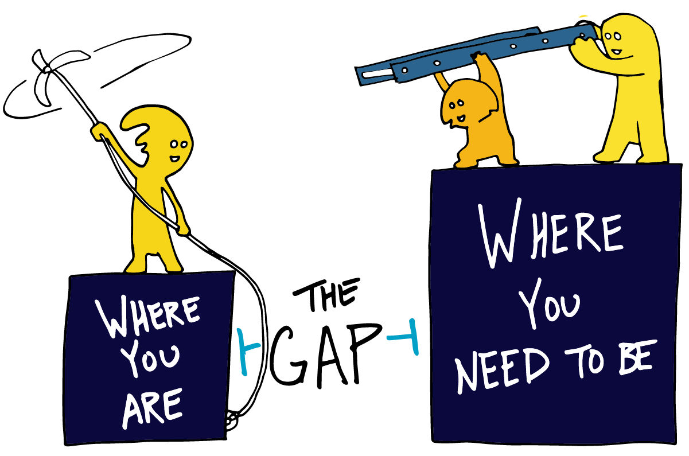

Way back in 2010 after I graduated high school, I had hopes and dreams of becoming a doctor. Nothing ever goes according to plan though, and 3 years into my Biology degree, I volunteered at a hospital and realized I couldn’t bear to be around so much injury, sickness, and death. It was too late to switch majors though, so I finished my degree and left to join the Army’s fledgling cyber branch.
Through the Army, I found a deep interest in pen testing. It was exciting, challenging, and most importantly, a well paying job with a great outlook that worked primarily in air-conditioned buildings. I enjoyed myself learning and working in cybersecurity, but I quickly found myself lacking in knowledge, both high and low level. My biology degree helped me to think critically and how to study effectively, but there were foundational gaps that I just couldn’t overcome. After all, I could only use Microsoft Office and browse the internet. I couldn’t read code, much less write it. I didn’t fully understand how networks work and how computers communicate at a low level. Trying to learn these things on my own just made my head spin. So like most soldiers leaving the Army, I went to get an education with the GI Bill.
The year I’ve been attending the University of Hawaii at Manoa has been hugely beneficial. My understanding of programming and the methodologies behind it have increased exponentially. I’m still very much a beginner, but my confidence reading and writing code is at an all-time high.
The things we’ve covered in Software Engineering 1 so far are things I did not expect to learn about, but am so pleasantly surprised. Learning how to use tools and systems that programmers use on a daily basis is so helpful. Learning about github, more about IDEs, creating a techfolio, as well as learning more about other programming languages like Javascript is very nice. I look forward to learning about things like Meteor and whatever else the course covers.
Once upon a time, I tried to take Offensive Security’s Pen Test course and failed…twice. Though it was no fault of my own (got sent to training a month in the first time and a surge effort happened a week after starting the second time). One of my weaknesses was not understanding how to adjust the code to fit my needs. Things like this severely hamper me and my goal of becoming an effective pen tester. Learning about Software Engineering will help with this goal.